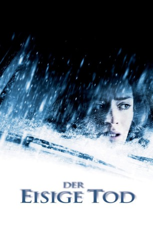

#10360 Der Eisige Tod
Alternativ: Wind Chill (Englischer Titel)
 
 IMDB-Wertung: 5.9 / 10
IMDB-Wertung: 5.9 / 10  Metascore: 52
Metascore: 52 
Sie hat ein schlechtes Gefühl, als sie zu dem fremden Kommilitonen ins Auto steigt - und soll Recht behalten. Das, was ihr der Unbekannte so erzählt, ergibt keinen rechten Sinn. Richtig unheimlich wird er ihr allerdings erst, als sie nach einem Beinahe-Unfall auf einer abgelegenen Route, die er als Abkürzung bezeichnet hat, liegen bleiben. Und es kommt noch schlimmer: Bald sehen beide unheimliche Gestalten vor ihrem Auto vorbeihuschen...
Jahr: 2007
Dauer: 90 Minuten
FSK: 16
Land: USA Studio: TriStar PicturesTonspuren: DD2.0 - ,
Untertitel: Englisch,
Auflösung: 720p (1280x536) Größe: 2560 MB
Genre: Thriller, Horror, Drama
Regisseur: Gregory Jacobs
Drehbuch: Joe Gangemi, Steven Katz
Soundtrack: Clint Mansell
Darsteller:
Datei: X:\2007(A-F)\Eisige Tod, Der (2007, FSK16, 1280x536).mkv seit 31.12.2018
Festplatte: HD 2007(A-Z)-2008(A-F)
 Es gibt insgesamt 65 Filme in der Gruppe '2007(A-F)'
Es gibt insgesamt 65 Filme in der Gruppe '2007(A-F)'